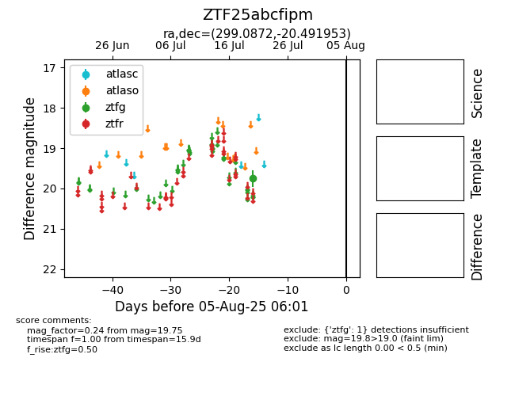

Target ZTF25abcfipm at 2025-08-05 06:01, see:
FINK: fink-portal.org/ZTF25abcfipm
Lasair: lasair-ztf.lsst.ac.uk/objects/ZTF25abcfipm
ALeRCE: alerce.online/object/ZTF25abcfipm
alt names
ZTF25abcfipm (ztf,fink)
coordinates:
equatorial (ra, dec) = (299.0872,-20.49195)
galactic (l, b) = (20.8694,-23.11657)
photometry
last ztfg=19.75
1 ztfg detections
